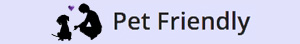

<ion-view view-title="Favorites | PetFriendly'>" hide-back-button="true">
  <ion-nav-title>
    
  </ion-nav-title>
  <ion-content>
    <ion-list>
      <a class="item item-thumbnail-left item-button-right" ng-repeat="petFav in petFavs" ng-click="description = ! description" ng-hide="petFav.isFav == false" href="#">
        
        <h2 class="favorites">{{petFav.name}}</h2>
        <p class="italic">{{petFav.age}}</p>
        <div ng:show="description" class="item item-text-wrap">{{petFav.description}} {{petFav.contact.name}} • {{petFav.contact.phone}} • {{petFav.contact.email}}</div>
        <button class="del-btn button button-royal" ng-click="deleteFavorite(petFav)">
          <i class="icon ion-trash-a"></i>
        </button>
      </a>
    <ion-list>
  </ion-content>
</ion-view>

